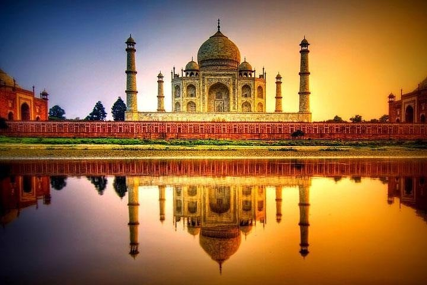

10 FASCINATING FACTS ABOUT THE
TAJ MAHAL THAT WILL BLOW YOUR
MIND!
PRIYA SRIVASTAVA, TIMESOFINDIA.COM, TRAVEL TRENDS, AGRA

01
10 fascinating facts about the Taj Mahal that will blow your mind
The Taj Mahal, often regarded as the symbol of true love, has been attracting
travellers from across the globe for its gorgeous beauty and splendid history.
monument of love is also one of the Seven Wonders of the World and is the country’s
most visited tourist attraction. The beautiful white marble structure is
a perfect
amalgamation of Persian, Islamic and Indian architecture.
There are a number of fascinating facts about the Taj Mahal that people might still
not be aware of. Let’s check them out.

02
Taj Mahal is taller than Delhi’s Qutub Minar
Would you believe us if we
say that the Taj Mahal is taller than Qutub Minar? Well, the Taj is 73 m high,
while the Qutub Minar measures 72.5 m.

03
There are more than 10 replicas of the Taj around the world
Well, you
read that right! There are over 10 replicas of Taj in the world but none of them
are as astounding as the original one.

04
The colour of the monument keeps changing throughout the day
This is quite
fascinating. The Taj Mahal basks in its own glory and in varied shades as the sun
ascends and descends down the horizon.

05
Value of the Taj Mahal today
It is believed that around INR 32 million was
spent to complete the construction of this white mausoleum (in 1653). Today, the
cost of building the Taj would be somewhere around INR 70 billion
(nearly $1 billion).

home
Welcome to Taj.
Welcome to Taj
Welcome to Taj
Welcome to Taj
Welcome to Taj Taj mahal
h 2o
a 2